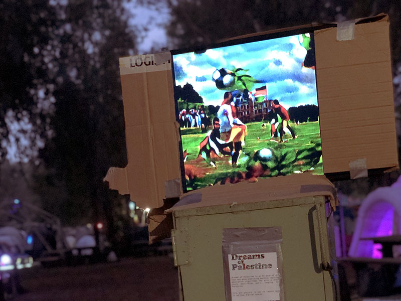

Dreams of Palestine
Dreams of Palestine (أَحْلَام فِلَسْطِين; חֲלוֹמוֹת פָלַסְטִין) is an AI work of art portraying one's longing for Palestine. The 167-seconds-long silent video was crafted using several machine-learning generative algorithms. These programs were fed with public art image-datasets and a personal short story written by the author and used to generate the symbolic features seen in each frame.
This synthetic-media artwork seeks to present numerous Palestinian heritage symbols and traditional elements in an abstract fashion, leaving much space for imagination from the perspective of the person experiencing the artwork.
With a mission to bring Palestinian presence into tech-art, this video is the first of its kind exploring the intersection of Palestinian footprints and generative art in a post-modern pre-metaverse world.
The work featured in a physical art installation that ran for three days in a small local burning-man event ("Burnerot") around the Jordan River (Palestine/Israel) during December 2021.

the art installation at Burnerot 2021

crowd interacting with the art installation